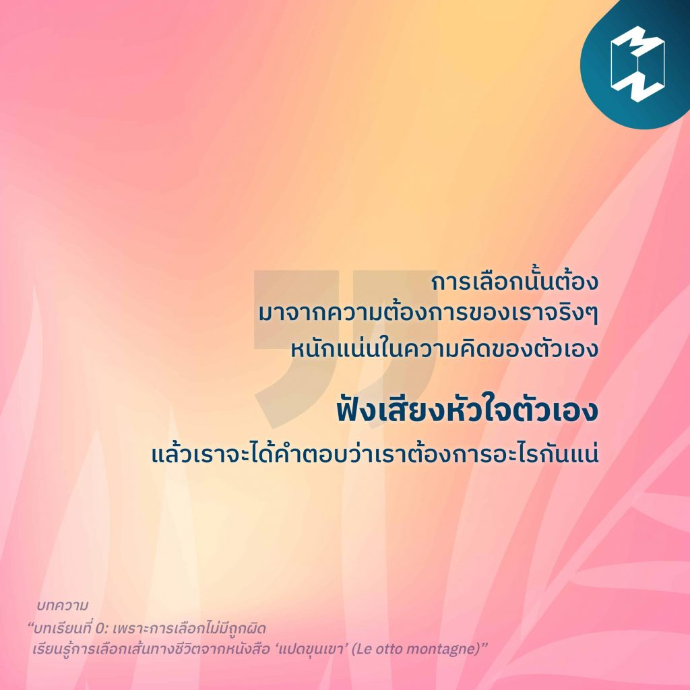

10)“ฟังเสียงหัวใจตัวเอง”
“การเลือกนั้นต้องมาจากความต้องการของเราจริงๆ หนักแน่นในความคิดของตัวเอง ฟังเสียงหัวใจตัวเอง แล้วเราจะได้คำตอบว่าเราต้องการอะไรกันแน่” ในเส้นทางชีวิตของเรามีถนนมากมายหลายสายให้เลือก และหลายครั้งเราก็ต้องยืนสับสนอยู่บนทางแยกเพราะไม่แน่ใจว่าควรจะไปทางซ้าย หรือทางขวา แต่หนึ่งบทเรียนสำคัญที่เราต้องเรียนรู้ไว้ก็คือ การเลือกไม่มีถูกไม่มีผิด ติดตามอ่านได้ในบทความ “บทเรียนที่ 0: เพราะการเลือกไม่มีถูกผิด เรียนรู้การเลือกเส้นทางชีวิตจากหนังสือ ‘แปดขุนเขา’